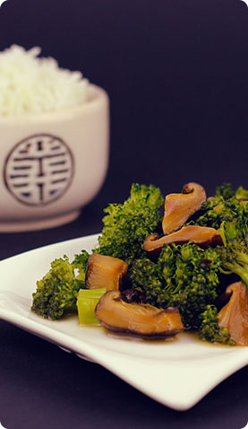

<section class="about">
    <div class="container">
        <h2 class="title">
            О компании
        </h2>
        <h4 class="title2">
            Заказ и доставка роллов, пиццы и WOK(Вок) в городе Курск  
        </h4>
        
        <p class="txt">
            Суши МИЮШИ открылись в октябре 2012г. и уже завоевали успех у тех, кто ценит японскую кухню и качественное приготовление блюд.     
        </p>
        <p class="txt">
            С 2013 года мы осуществляем не только доставку на дом, теперь для вас открыт наш уютный небольшой зал. Придя сюда, вы сможете плотно пообедать, насладиться прекрасными напитками, посидеть с друзьями или обзавестись новыми знакомствами.
        </p>
        <p class="txt">
            Открывая зал, Мы преследовали цель предоставить своим посетителям максимум удобства и комфорта, поэтому, придя сюда в первый раз, вы почувствуете себя как рыба в воде, окунувшись в домашнюю и теплую обстановку!
        </p>
        <a href="#" class="show-more">
            Показать ещё
        </a>
        <p class="txt">
            Особое внимание мы уделяем организации доставки суши и других блюд, которая осуществляется только по г. Курске. Четкая и слаженная работа курьеров позволяет максимально сократить время от приготовления блюда до его попадания на стол заказчику. Как правило, оно составляет от 20 до 60 минут в зависимости от местонахождения клиента. Операторы службы доставки всегда осведомлены обо всех изменениях времени доставки и предупреждают клиентов заранее, а при возможных серьезных задержках в связи с дорожной ситуацией предложат Вам альтернативу. Мы беремся только за ту работу, которую можем выполнить в срок.
        </p>
        <p class="txt">
            В меню суши МИЮШИ представлено все многообразие японской кухни. Классические суши, и роллы приготовлены в соответствии с традиционными рецептами. Для любителей нежных и тающих во рту блюд предлагаются роллы с мясом краба, а также для больших любителей копченого угря потрясающий ролл Дракон. Для желающих пробовать что-то новое и необычное – острые ГУНКАНЫ и новинка нашего меню - ИНАРИ, широкий выбор горячих роллов. Большим компаниям будет удобно заказать суши и роллы, объединенные в сеты, включающие сразу несколько видов каждого из этих блюд. Кроме того, меню суши МИЮШИ не ограничено только японской кухней, здесь всегда можно заказать горячие и холодные блюда ЛАПША или РИС WOK с различными мясными и рыбными наполнителями, салаты, горячие закуски и различные напитки.
        </p>
    </div>
</section>